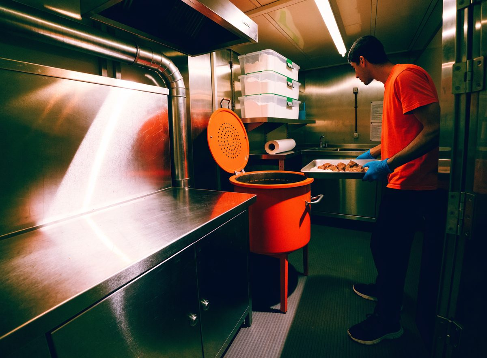
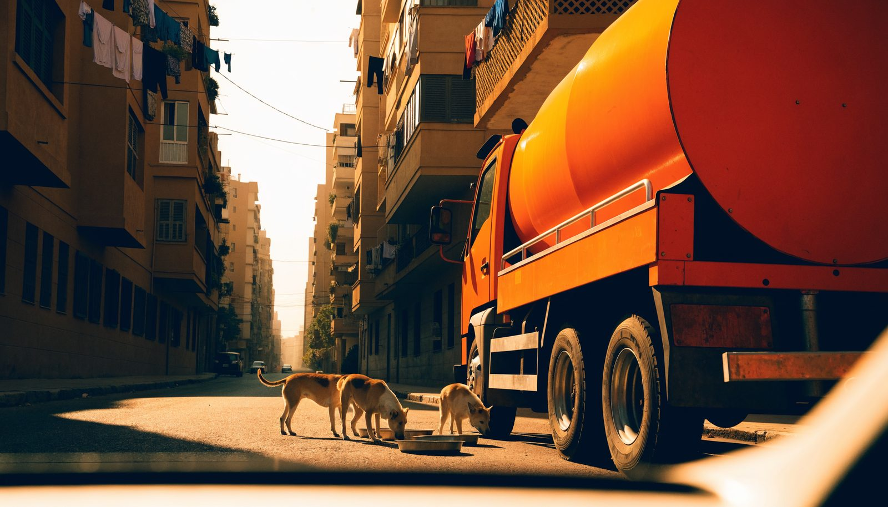

A road-legal van with a food-grade mixing drum on the back: it collects, cooks, drives and serves, then washes itself down and does it again tomorrow.
A rotating food-grade drum mixes and heats fresh ingredients safely, so meals leave the truck hot and clean.
Sealed ingredient bins, cold storage and a separate raw area, so nothing spoils on a Cairo afternoon.
Meals go out through a side hatch into trays, bowls or known feeding spots — the animals never have to come to us.
Edible plates, sealed waste bins and a wash down at every stop. The street looks the same after we have been as before.

Streets with large stray populations, and feeding spots that local feeders and NGOs already keep. We go where the need is known, not where it photographs well.
A paid local driver who cares about animals, with volunteers alongside. Paid, because a round that runs on goodwill alone stops the week someone gets sick.
Meals served, stops made and the schedule — so anyone who gave us money can see what it bought.

A truck handing out meat in a public street has to satisfy Egyptian law, and we would rather be slow than shut down. This is the list we are working through.
This is the first truck: on the road, legal, and running for its first three months. Nobody here takes a salary from it — the only wage on this list is the driver’s.
When the first truck is steady, the same plan repeats: Alexandria, Giza, and then wherever street animals are going hungry and someone local is willing to drive.
The truck carries our name for a reason. OneTailOneMeal.com — compassion on wheels, and an open invitation to donate, volunteer, or feed alongside us.
Ways to help